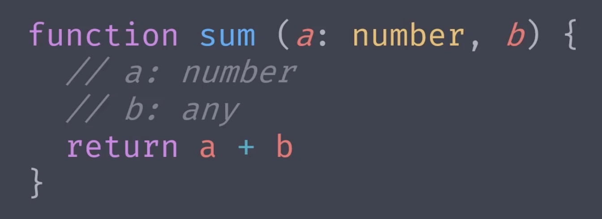
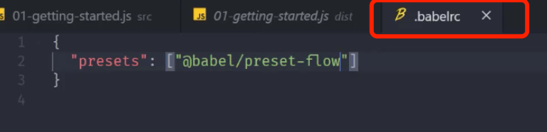
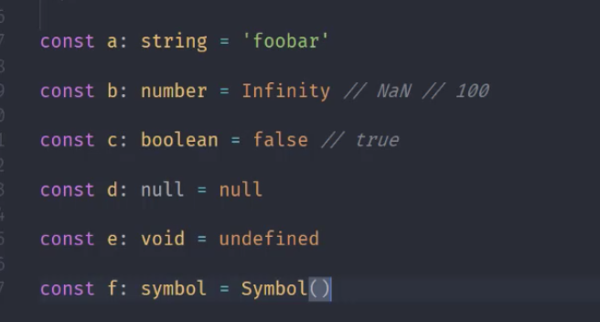
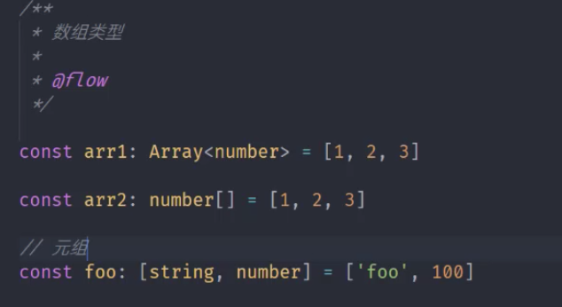
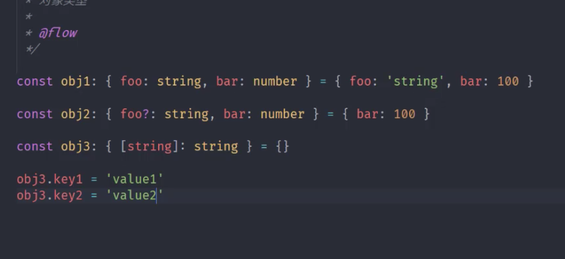
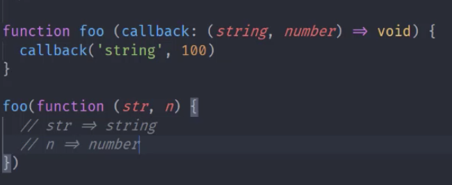
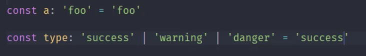
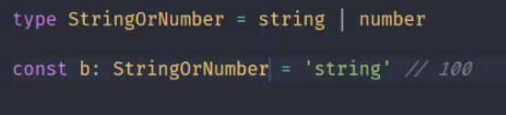
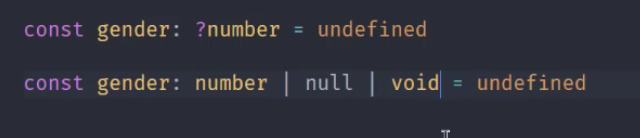
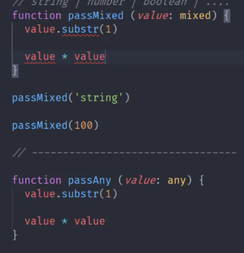

Js类型检查器
给参数加上注解

使用flow
安装flow yarn add flow-bin —dev
初始化flow配置文件 yarn flow init
在需要使用flow的方法上 添加@flow的注解
关闭js的语法校验 设置 => javescript validate 取消勾选
去除类型注解
官方提供模块 yarn flow-remove-types . -d dist
Babel (js编译工具)
安装 yarn add @babel/core @babel/cli （babel的命令行工具，可以使我们直接在命令行中使用babel 的命令） @babel/preset/preset-flow （转换flow类型的插件）
添加babel的配置文件

运行命令 yarn babel src -d dist
安装 flow language support 插件可以在编辑器中直接看到类型错误提示
flow官网编辑器支持情况的网址：
Flow类型推断
Flow类型注解
能标记 参数类型
函数返回值类型
变量类型
Flow的原始类型

数组类型

对象类型

函数类型:

特殊类型
字面量类型(限制变量是某一个值)

别名:

maybe类型

Mixed和any
任意类型
any是弱类型，mixed是强类型

flow的类型手册
打不开 借助科学上网的工具